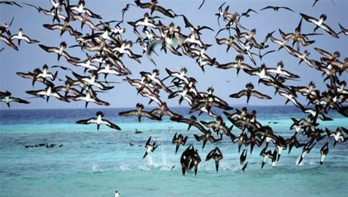
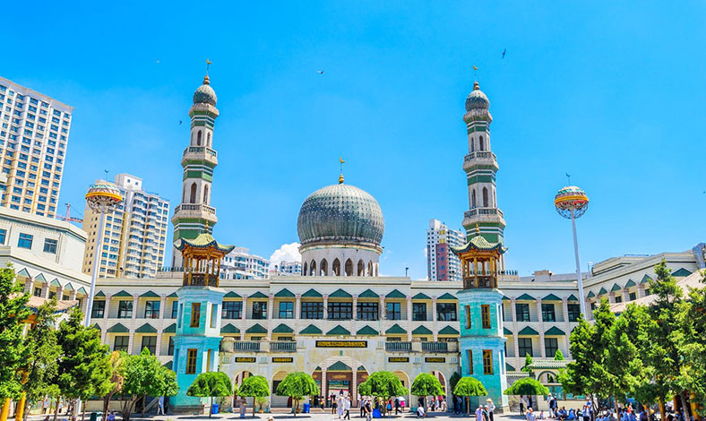

Explore Xining – Where Plateau Skies Shine, Tibetan Culture Blooms, and Flavors Warm the Soul



Xining, the capital of Qinghai Province and the “Gateway to the Qinghai-Tibet Plateau,” is a city where blue skies meet snow-capped mountains, and Tibetan prayer flags flutter alongside Han-style buildings. Here, the air is crisp (thanks to its 2,261-meter altitude), the Qinghai Lake glistens just an hour away, and the food blends Han, Tibetan, and Hui flavors into hearty, warming dishes. A trip to Xining is a journey to China’s highlands: wandering the colorful Dongguan Mosque, tasting hand-cut noodles at a street stall, and staring in awe at Qinghai Lake’s turquoise waters—where flocks of birds dance on the waves in summer.

Nature lovers will fall for Qinghai Lake (China’s largest inland lake, a paradise for birdwatchers and cyclists), Kumbum Monastery (a Tibetan Buddhist monastery surrounded by green hills and prayer wheels), and Ta’er Temple (with golden roofs that glow under the plateau sun). History buffs can step back in time at the Qinghai Provincial Museum (home to ancient Qiang and Tubo relics), Dongguan Mosque (a 600-year-old Islamic architectural gem), and the Qinghai Lake Bird Island (a historic sanctuary for migratory birds).
And the food? It’s built for the plateau’s cool weather. Qinghai Lamb Hot Pot (with tender local lamb and root vegetables) warms you from the inside out. Hand-Cut Noodles with Lamb Soup (Qiegao Mian) is a daily staple—chewy noodles in a rich broth. For a sweet treat, Yogurt with Brown Sugar (a Tibetan favorite) is tangy, creamy, and perfect for balancing spicy dishes. By the end of your trip, you’ll understand why Xining is called “the Plateau Pearl”—and why its mix of nature, culture, and flavor lingers in your memory.

Travel Tips for Xining
Best Time to Visit:
Tip 1: Summer (June–August): Mild (15°C–25°C), Qinghai Lake’s油菜花 (rapeseed flowers) bloom golden, and Bird Island is full of migratory birds—ideal for lake trips and hiking.
Tip 2: Autumn (September–October): Cool (10°C–20°C), clear skies for mountain views, and fewer crowds—great for visiting monasteries.
Tip 3: Avoid winter (December–February): Cold (-10°C–5°C) and snowy; spring (March–May) is windy and dry (occasional sandstorms).
Transportation:
Tip 1: Getting to Xining:
Fly to Xining Caojiabao International Airport (XNN)—take the airport bus (30 mins, 21 CNY) or a taxi (40 mins, ~150 CNY) to downtown. High-speed trains from Lanzhou (1.5 hours, ~50 CNY) or Chengdu (4 hours, ~200 CNY) are convenient.
Tip 2: Getting Around:
Car Rental: 200–300 CNY/day (best for exploring Qinghai Lake and surrounding areas—hire a driver if you’re not used to plateau roads).
Buses: Lines 1, 2, 3 cover downtown spots; single ride 1–2 CNY. Special buses to Qinghai Lake (1.5 hours, 35 CNY) run daily in summer.
Taxis/Didi: Starts at 8 CNY; short trips within downtown cost ~10–20 CNY.
Essential Tips:
Tip 1: Acclimatize to the altitude: Xining is 2,261m above sea level—drink plenty of water, avoid heavy exercise on your first day, and carry a small oxygen tank (available at pharmacies, ~50 CNY) if you feel dizzy.
Tip 2: Respect local culture: When visiting monasteries like Ta’er Temple, dress modestly (cover shoulders and knees) and avoid touching prayer wheels with your left hand.
Tip 3: Try street food at Xiaqiao Food Street: The area has stalls selling lamb skewers, noodles, and yogurt—follow locals to find the best spots.